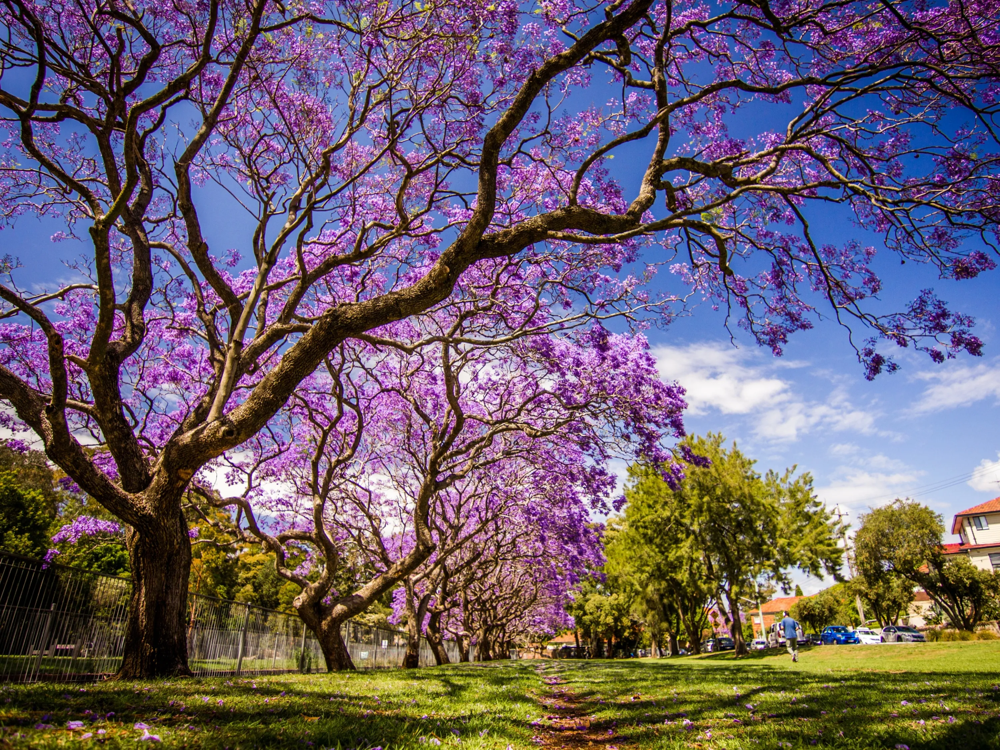

✅ Descripción general
Nombre común: Jacarandá
Nombre científico: Jacaranda mimosifolia
Origen: América del Sur (Argentina, Brasil, Bolivia y Paraguay)
Tipo: Árbol ornamental caducifolio
Altura: De 8 a 15 metros (puede llegar a 20 m)
🌸 Características principales
- Flores: Violeta/lila, forma de campana, florecen en primavera y a veces en otoño
- Hojas: Compuestas, verdes, similares a las del helecho
- Fruto: Cápsulas leñosas y planas con semillas aladas
- Corteza: Grisácea y algo rugosa
📍 Usos y beneficios
- Ornamental: Muy valorado por su floración espectacular
- Sombra: Proporciona sombra amplia por su copa extendida
- Estética: Embellece calles y parques con su color violeta
- Ambiental: Purifica el aire y refresca el entorno
⚠ Aspectos a tener en cuenta
- Raíces: No agresivas, pero se recomienda plantar lejos de estructuras
- Frutos secos: Pueden causar suciedad o resbalar
- Alergias: Poco alergénico, adecuado para zonas urbanas
